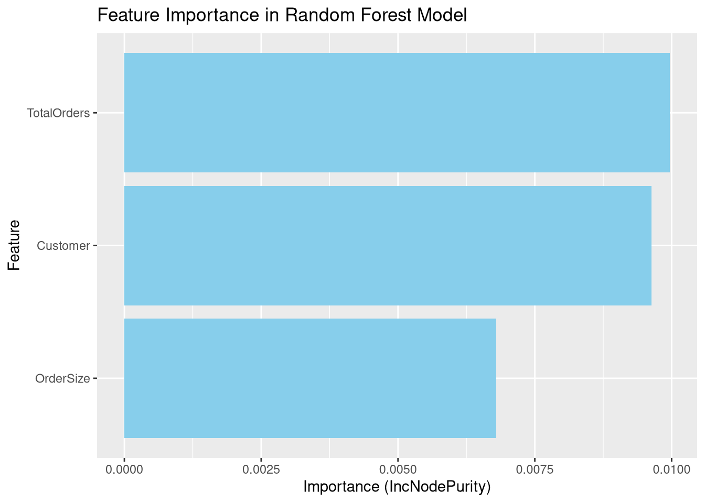

This document presents a Random Forest analysis of customer order data, focusing on predicting fulfillment rates based on various features.
Setup and Data Preparation
First, we’ll load the necessary libraries and create our dataset based on the bar graph data.
Code
library(tidyverse)library(randomForest)library(caret)# Create the dataset based on the bar graph datacustomer_data <-tibble(Customer =c("Smoothie Island", "Philly Bite", "PlatePioneers", "Berl Company", "DineLink Intl"),TotalOrders =c(1701, 1556, 1396, 906, 589),ClosedShort =c(455, 267, 143, 5, 42),Fulfilled =c(1246, 1289, 1253, 901, 547))# Feature engineeringcustomer_data <- customer_data %>%mutate(FulfillmentRate = Fulfilled / TotalOrders,OrderSize =case_when( TotalOrders >=1500~"Large", TotalOrders >=1000~"Medium",TRUE~"Small" ) )# Convert categorical variables to factorscustomer_data$Customer <-as.factor(customer_data$Customer)customer_data$OrderSize <-as.factor(customer_data$OrderSize)# Display the prepared dataknitr::kable(customer_data)
Customer
TotalOrders
ClosedShort
Fulfilled
FulfillmentRate
OrderSize
Smoothie Island
1701
455
1246
0.7325103
Large
Philly Bite
1556
267
1289
0.8284062
Large
PlatePioneers
1396
143
1253
0.8975645
Medium
Berl Company
906
5
901
0.9944812
Small
DineLink Intl
589
42
547
0.9286927
Small
Data Splitting
We’ll split our data into training and testing sets. Note that due to the small sample size, this split may not be very meaningful, but we include it for demonstration purposes.
Code
set.seed(123) # for reproducibilitytrain_index <-createDataPartition(customer_data$FulfillmentRate, p =0.8, list =FALSE)train_data <- customer_data[train_index, ]test_data <- customer_data[-train_index, ]
Random Forest Model
Now, we’ll train our Random Forest model using the training data.
Code
rf_model <-randomForest( FulfillmentRate ~ Customer + TotalOrders + OrderSize,data = train_data,ntree =500,mtry =2,importance =TRUE)# Print summary of the modelprint(rf_model)
Call:
randomForest(formula = FulfillmentRate ~ Customer + TotalOrders + OrderSize, data = train_data, ntree = 500, mtry = 2, importance = TRUE)
Type of random forest: regression
Number of trees: 500
No. of variables tried at each split: 2
Mean of squared residuals: 0.006713408
% Var explained: 16.36
Model Evaluation
Let’s evaluate our model by making predictions on the test set and calculating performance metrics.
Code
# Make predictions on the test setpredictions <-predict(rf_model, test_data)# Evaluate the modelmse <-mean((predictions - test_data$FulfillmentRate)^2)rsquared <-1- (sum((test_data$FulfillmentRate - predictions)^2) /sum((test_data$FulfillmentRate -mean(test_data$FulfillmentRate))^2))cat("Mean Squared Error:", mse, "\n")
Mean Squared Error: NaN
Code
cat("R-squared:", rsquared, "\n")
R-squared: NaN
Feature Importance
We can analyze which features are most important in our model’s predictions.
Code
importance_df <-importance(rf_model) %>%as.data.frame() %>%rownames_to_column("Feature") %>%arrange(desc(IncNodePurity))ggplot(importance_df, aes(x =reorder(Feature, IncNodePurity), y = IncNodePurity)) +geom_bar(stat ="identity", fill ="skyblue") +coord_flip() +labs(title ="Feature Importance in Random Forest Model",x ="Feature",y ="Importance (IncNodePurity)")

Feature Importance in Random Forest Model
Actual vs Predicted Fulfillment Rates
Finally, let’s visualize how our model’s predictions compare to the actual fulfillment rates.
This analysis demonstrates the application of Random Forest to predict customer order fulfillment rates. However, due to the very small sample size, these results should be interpreted with caution. In a real-world scenario, you would need a much larger dataset to draw meaningful conclusions and make reliable predictions.